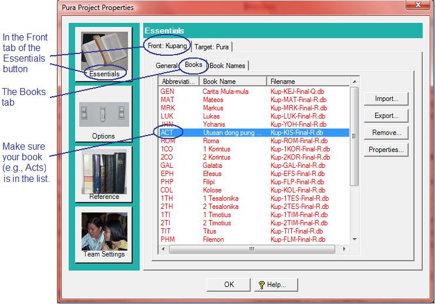
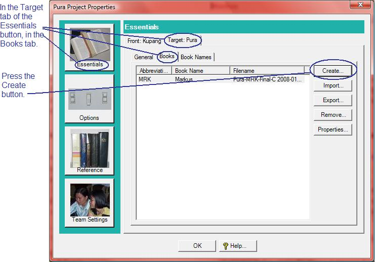

OurWord Help
Creating
a new, empty book for translating
To set up a new, blank book to translate, follow the stebs below. All of this is done in the Configuration dialog, which is accessed through the Tools dropdown. (If the Configuration dialog is not visible, use the Setup Features dialog to turn it on.)
1. Make sure that the corresponding book exists in the Source / Front Translation. In OurWord, a book in the vernacular is not edited by itself; it must be created from another book; and thus will use that book's decisions for section breaks, paragraph styles, etc. Thus is it impossible to create a blank book unless you have first told OurWord about the source book.
As shown below, the Books tab shows the list of books for a given translation (in this case, for the Kupang language.) You can use the Import button to bring in a file into this source language.

2. Press the Create button in the target translation. In the Target tab (in this illustration, this is the Pura language), again in the Books tab, click on the Create button..

3. Supply information about the book. In response to the Create button, OurWord presents a wizard that will walk you through the process. It first has you choose which book (based on what is available, see #1 above), and then has you identify the folder into which you wish to store the new book. Upon finishingi the wizard, the new, empty book should appear in the list of books for the target translation. You can use the Book button in the main toolbar to bring it up onto the screen for editing.
Updated as of Version 1.0.